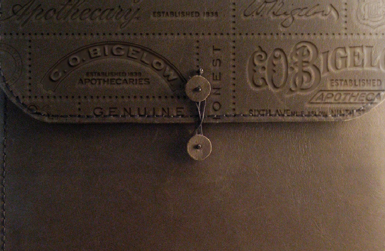
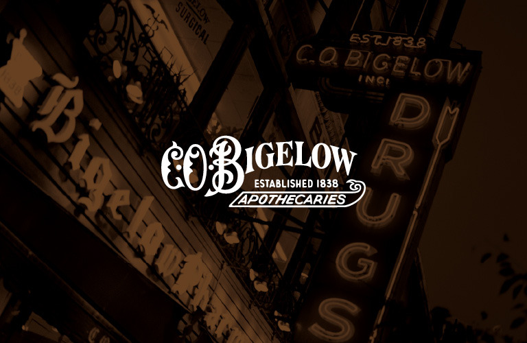
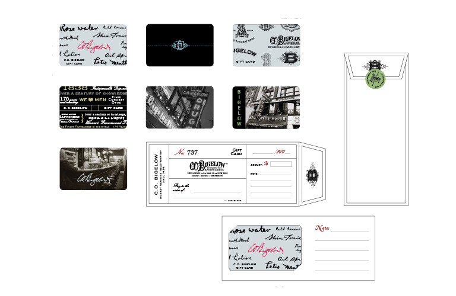

C.O. Biglow
C.O. Bigelow is America’s oldest apothecary. The 170-year old brand, owned by The Limited, was in need of an outside marketing partner to provide brand development services for their nine stores.
Identity, branding, strategy, and design created by Tractorbeam for the heritage brand C.O. Biglow.
Found on Graphic Exchange